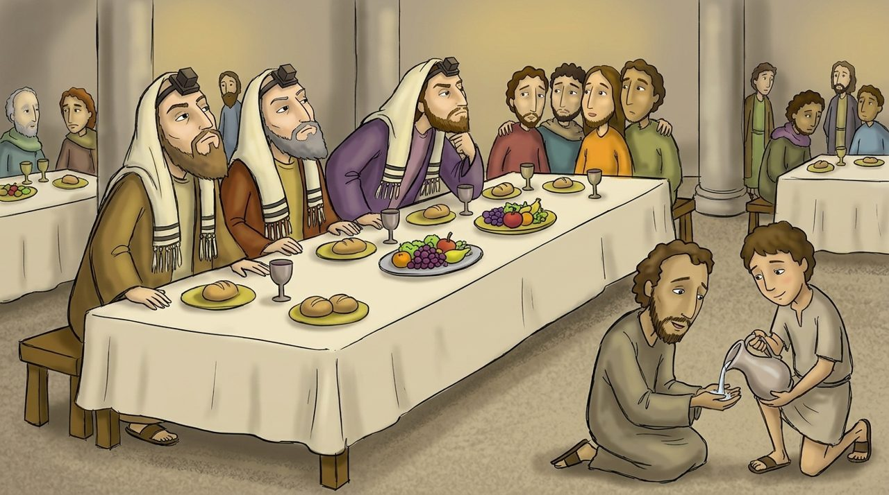

1 · Matta 23:1–12
Danışıb əməl etməyənlər
İsa deyir ki, ilahiyyatçılar və fariseylər “Musanın kürsüsündə oturublar”, onların təliminə əməl edin, amma əməllərindən nümunə götürməyin. “Çünki deyirlər, amma etmirlər.”
Onlar qutularını genişləndirir, paltarlarının saçaqlarını uzadır, ziyafətlərdə yuxarı başı və “ravvi” adını sevirdilər. İsa “Sizin Müəlliminiz birdir, hamınız qardaşsınız” deyib böyüyün xidmət edən olduğunu yenidən deyir (20:26).
Dərindən baxaq · Yeddi “vay halınıza”
23:13–36-da “Vay halınıza, ey ikiüzlü ilahiyyatçılar və fariseylər” yeddi dəfə təkrarlanır. Bu, 5-ci fəsildəki bəxtiyarlıq sözlərinə zidd quruluşdur. Ağcaqanadı süzüb dəvəni udmaq, çölü təmiz, içi çirkli kasa, ağardılmış qəbir kimi güclü bənzətmələr var.